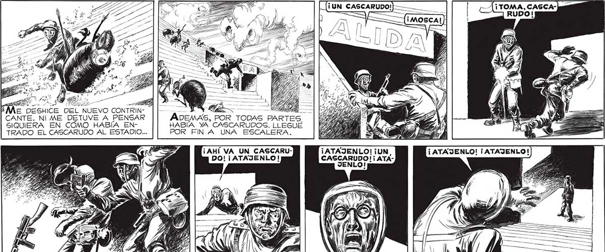
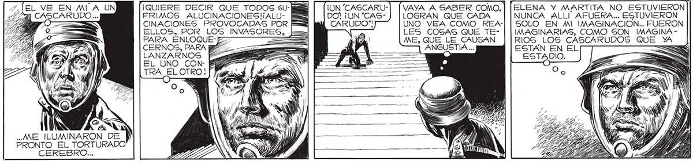

129 7 E E - E E Me DESH R de - —— CANTE. NI ME DETUVE A PENSAR ADEMAS, POR TODAS ES SIQUIERA EN COMO HABÍA EN- HABÍA YA CASCARUDOG. LLEGUE TRADO EL CASCARUDO AL ESTADIO... POR FIN A UNA ESCALERA. ¡AHÍ VA UN CASCARU- ¡ATAJENLO! ¡UN, DO! ¡ ATAJENLO! CASCARUDO! ¡ ATAl Ñ / / A Ñ ¿No SEGUÍ CORRIENDO, LOS GRITOS Y DESESPERADOS DE MOSCA, EL NX SIEMPRE IMPERTÉRRITO HISTORIADOR... VAYA A SABER COMO, | [ELENA Y MARTITA NO ESTUVIERON LOGRAN QUE CADA NUNCA ALLI” AFUERA... ESTUVIERON UNO VEA COMO REA-| | SOLO EN MI IMAGINACION.. FUERON LES COSAS QUE TE- | | IMAGINARIAS, COMO SON IMAGINA ME, QUE LE CAUSAN RIOS LOS CASCARUDOS QUE Y ANGUSTIA ... ESTAN EN EL ===>; : o ESTADIO. =s 2, EL VE EN MI A UN ¡QUIERE DECIR QUE TODOS SUCASCARUDO ... FRIMOS ALUCINACIONES! ALU- | D—= an CINACIONES PROVOCADAS POR Faz 2% ELLOS, POR LOS INVASORE PARA ENLOQUE- E CERNOS, PARA aa LANZARNOS PF EL UNO CON HA PASE OTRO. Ni > 3 a y SY 4 j SANA y l NN NN MM DE NN PRONTO EL TORTURADO CEREBRO..,

